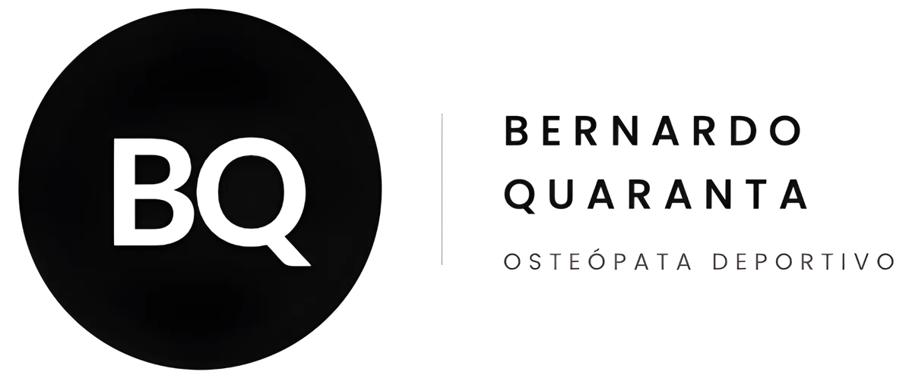
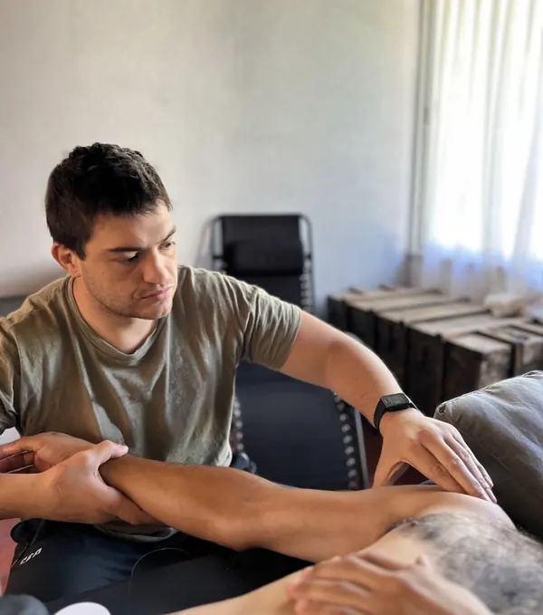
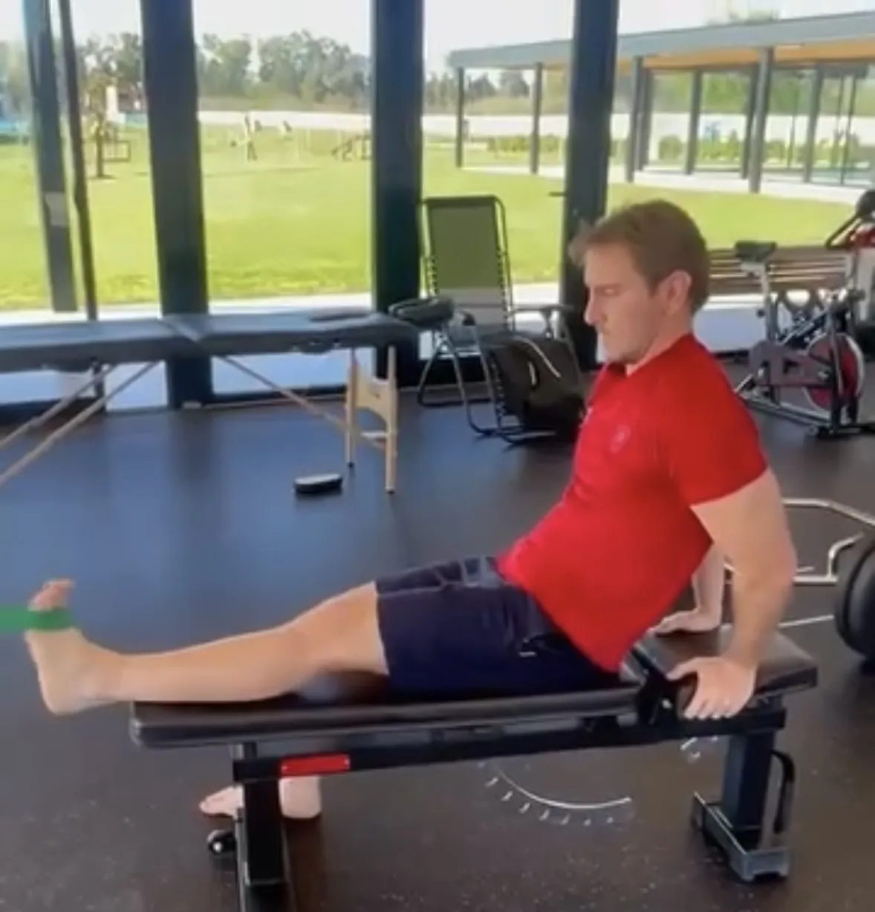

Kinesiología deportiva
Evaluación funcional del movimiento, rehabilitación de lesiones y trabajo específico según la exigencia de cada deporte. El objetivo: que el cuerpo se mueva mejor de lo que se movía antes de la lesión.

Rehabilitación deportiva y un enfoque osteopático integral, para quienes exigen a su cuerpo y necesitan que alguien lo entienda por completo.
Respondo personalmente cada mensaje.
Evaluación funcional del movimiento, rehabilitación de lesiones y trabajo específico según la exigencia de cada deporte. El objetivo: que el cuerpo se mueva mejor de lo que se movía antes de la lesión.
Un enfoque estructural e integrativo que entiende al cuerpo como un todo: función, emoción y contexto. Busca el origen de la molestia, no solo dónde duele. Orientada principalmente a la consulta clínica.
Ambas están integradas en una misma consulta: la kinesiología devuelve la función, la osteopatía ordena al cuerpo como un todo. Nada es matemático: cada plan se arma para ese paciente. ¿Dudas sobre cuál te sirve? Mirá las preguntas frecuentes.

Jugué al rugby y viví distintas lesiones en carne propia. Tuve la suerte de cruzarme con grandes profesionales que me hicieron disfrutar de esta profesión. Hoy son mis modelos a seguir. Para mí este trabajo es servicio: escuchar, conectar y empatizar con cada paciente, exigiéndome un poco más cada día.
Hoy mi práctica está enfocada en el deporte, algo que me acompañó toda la vida y que hoy puedo devolver, ayudando a quienes lo viven de la misma manera.
“Integral: mucho movimiento, terapia manual, maniobras osteopáticas, siempre con exigencia.”
Antes de dedicarme a la kinesiología, viví el deporte de forma profesional. Eso cambia la forma en que hoy entiendo la exigencia física y emocional de un deportista.




Llegué rengueando y ahora ya puedo correr, saltar. Sos el 1.
Muy completo tu laburo. Más que conforme.
Mil gracias por la buena onda todos los días. Me voy muy contento y pudiendo jugar.
Me siento 110 puntos. Desde el día uno, totalmente predispuesto, y eso hace la diferencia.
Sin vos nunca hubiera vuelto así de bien y fuerte. Tremendo profesional, siempre buena onda.
¿Vos también estás volviendo a moverte?
Contame tu caso →La atención es particular y se entrega factura, para que puedas presentarla a tu obra social o prepaga y gestionar el reintegro correspondiente.
Escribiendo por WhatsApp. Coordinamos día, horario y sede — Recoleta o Pilar — según tu disponibilidad.
En Recoleta (French 2342, CABA) y en Pilar (Barrio privado El Olivar, Buenos Aires). Coordinamos la sede según tu conveniencia.
La kinesiología trabaja la rehabilitación funcional del movimiento. La osteopatía aborda el cuerpo como un todo, buscando el origen de la molestia más allá de dónde duele. En la consulta se integran ambas.
No. La mayoría de mis pacientes son deportistas amateurs que quieren volver a entrenar y competir sin dolor, aunque también trabajé con clubes como CUS Milano y Petrarca Rugby.
Depende de la lesión y del objetivo de cada paciente. Se define en la primera consulta, armando un plan personalizado — nada es matemático.
Kinesiólogo y Osteópata deportivo en Recoleta (CABA) y Pilar (Buenos Aires). Atención particular: se entrega factura. Escribí por WhatsApp para coordinar día, horario y sede.